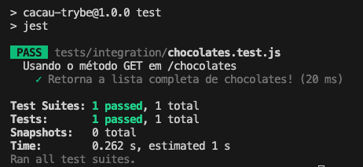

4.7 - Testes de Integração com Supertest
Dando continuidade ao nosso cenário de testes de integração com base no contrato da API, vamos implementar nossos testes usando Jest e Supertest.
Na última lição, criamos a rota GET /chocolates, e agora usaremos essa rota para realizar nossos testes de integração.
Supertest
Supertest é uma biblioteca que facilita a criação de testes para APIs, fornecendo uma maneira simples de enviar requisições HTTP diretamente para o app sem a necessidade de levantar um servidor manualmente. Com ele, podemos testar rotas e verificar se as respostas estão de acordo com o esperado.
OBS da IA
Alternativa mais moderna
- O
@types/jestsó serve para autocompletar no editor quando o projeto é JS puro.
Para o SAP CAP
- No CAP o
cds.testsubstitui o supertest: ele devolve clientes HTTP prontos.
const cds = require('@sap/cds');
const { GET, POST, expect } = cds.test(__dirname + '/..');
test('lista os times', async () => {
const { status, data } = await GET('/odata/v4/teams/Teams');
expect(status).to.equal(200);
expect(data.value).to.have.length(3);
});Instalação do Jest e Supertest
Para começar, vamos instalar as bibliotecas Jest e Supertest:
npm install --save-dev --save-exact jest@29.7.0 supertest@7.0.0 @types/jest@29.5.13
Depois, vamos ajustar o package.json para que o comando de testes funcione corretamente:
"scripts": {
"test": "jest"
}
Com isso, estamos prontos para transformar os contratos da nossa API em cenários de teste. Vamos agora criar o primeiro teste de integração.
Escrevendo o Primeiro Teste
Começaremos pela rota GET /chocolates que retorna a lista completa de chocolates.
// tests/integration/chocolates.test.js
const request = require('supertest');
const app = require('../../src/app');
describe('Usando o método GET em /chocolates', () => {
test('Retorna a lista completa de chocolates!', async () => {
const response = await request(app)
.get('/chocolates')
.expect(200);
});
});
Entendendo o Código
-
require('supertest'): O Supertest nos permite simular requisições HTTP diretamente no app Express, sem a necessidade de subir o servidor manualmente. Em outras palavras, Supertest cria seu própriolisten()
-
require('../../src/app'): Aqui estamos importando a aplicação que criamos no app.js. Como o Supertest utiliza o app diretamente, não precisamos inicializar o servidor para fazer os testes.
-
describeetest: A estrutura dedescribeetesté a mesma que usamos com Jest, organizando os testes por grupos e criando casos de teste específicos.
-
request(app).get('/chocolates').expect(200): Esse trecho faz a requisiçãoGETpara o endpoint/chocolates(get('/chocolates')) e verifica se o status da resposta é200 - OK(expect(200)).
De olho na dica 👀: Poderíamos também testar o status da resposta, seguindo este outro formato
expect(response.status).toBe(200);.
Executando o Teste
Agora, execute o teste com o comando npm test. Se tudo estiver correto, o teste deverá passar, retornando um status 200 da nossa API. O resultado será algo parecido com a imagem abaixo:

Verificando o Conteúdo da Resposta
No teste acima, você pode ter percebido que verificamos apenas o status da resposta. Agora, vamos garantir que os dados retornados também estão corretos:
// tests/integration/chocolates.test.js
const request = require('supertest');
const app = require('../../src/app');
// describe('Usando o método GET em /chocolates', () => {
// test('Retorna a lista completa de chocolates!', async () => {
const resultExpected = {
chocolates: [
{ id: 1, name: 'Mint Intense', brandId: 1 },
{ id: 2, name: 'White Coconut', brandId: 1 },
{ id: 3, name: 'Mon Chéri', brandId: 2 },
{ id: 4, name: 'Mounds', brandId: 3 },
]
};
// const response = await request(app)
// .get('/chocolates')
// .expect(200);
expect(response.body).toEqual(resultExpected);
// });
// });
Entendendo as Alterações
-
resultExpected: Essa constante define o resultado esperado da requisição, com a lista de chocolates.
-
expect: Estamos verificando se o corpo da resposta do endpoint (response.body) corresponde exatamente à nossa lista de chocolates (resultExpected).
Agora execute novamente os testes com o comando npm test e observe que, além do status 200, também estamos validando os dados retornados pela API.
Minhas anotações
Atalhos: ← → navegar · Ctrl K ou / buscar